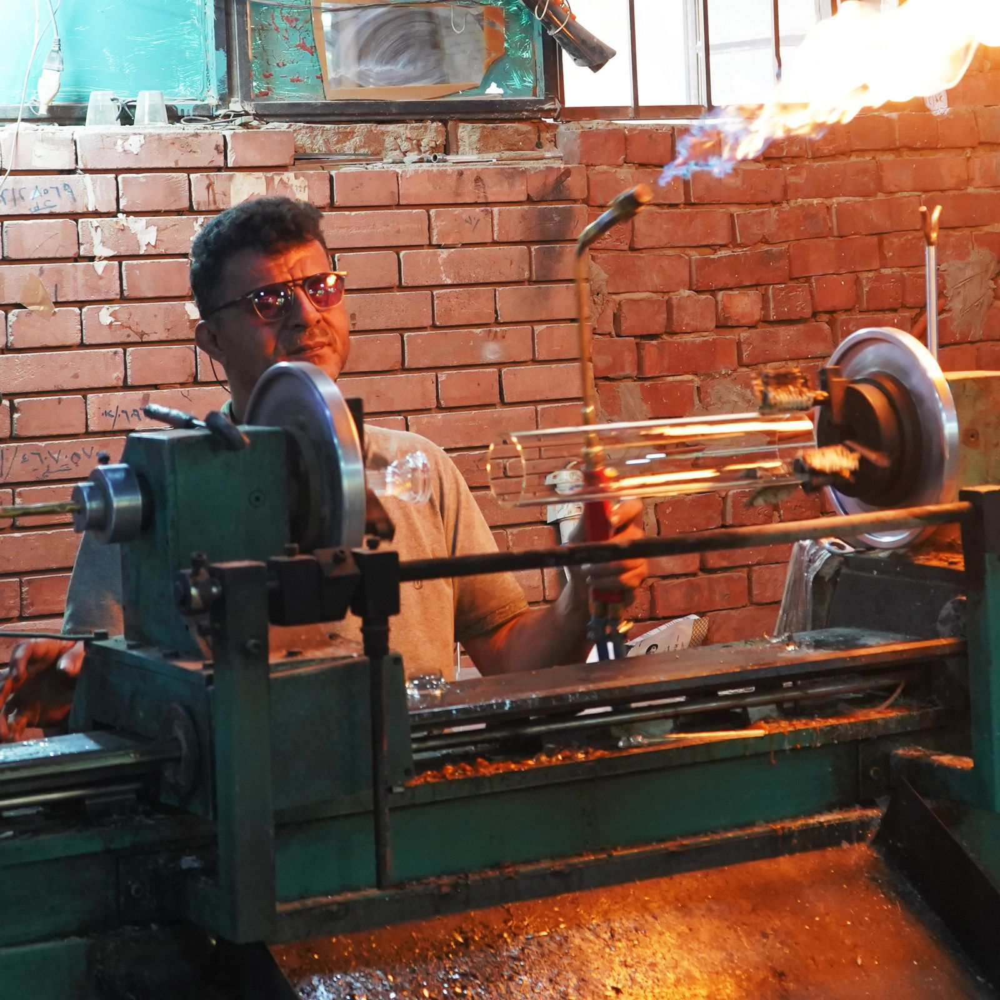
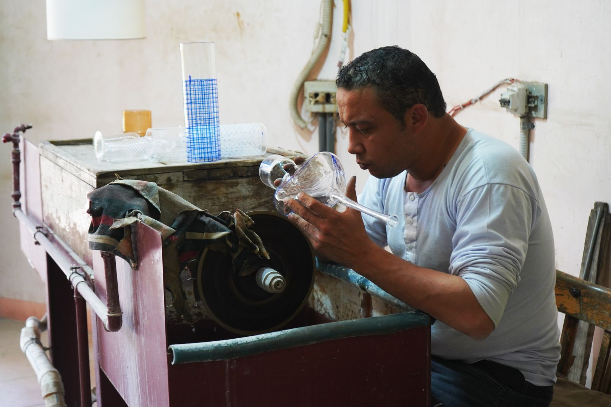
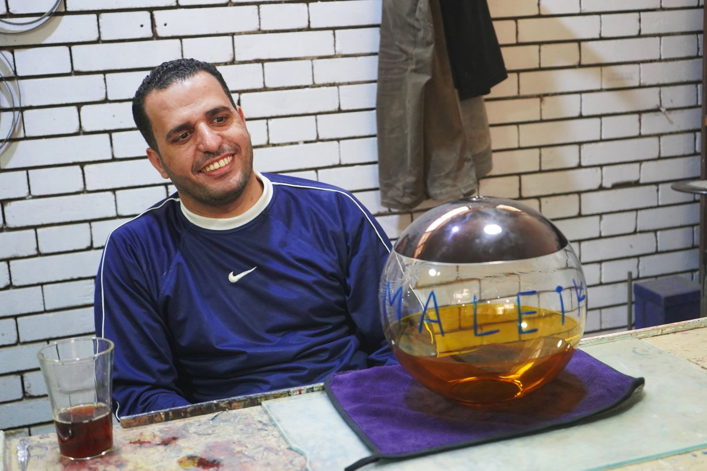
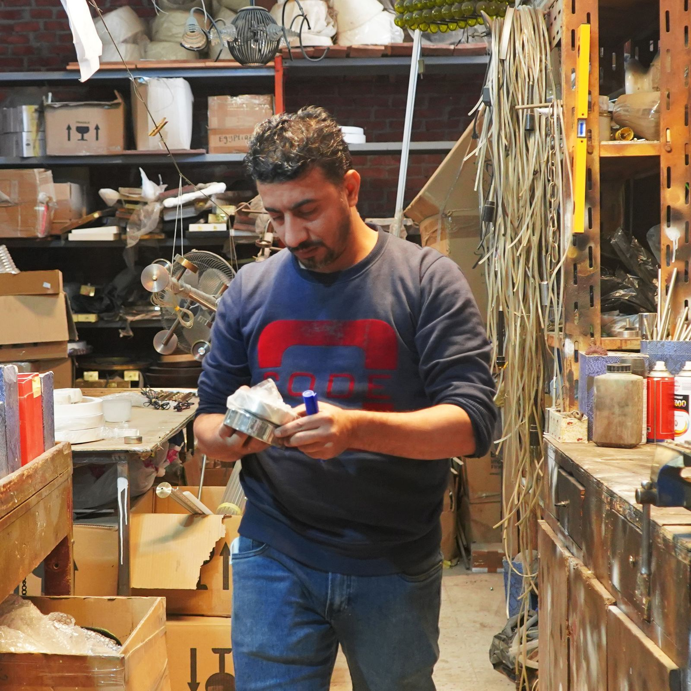
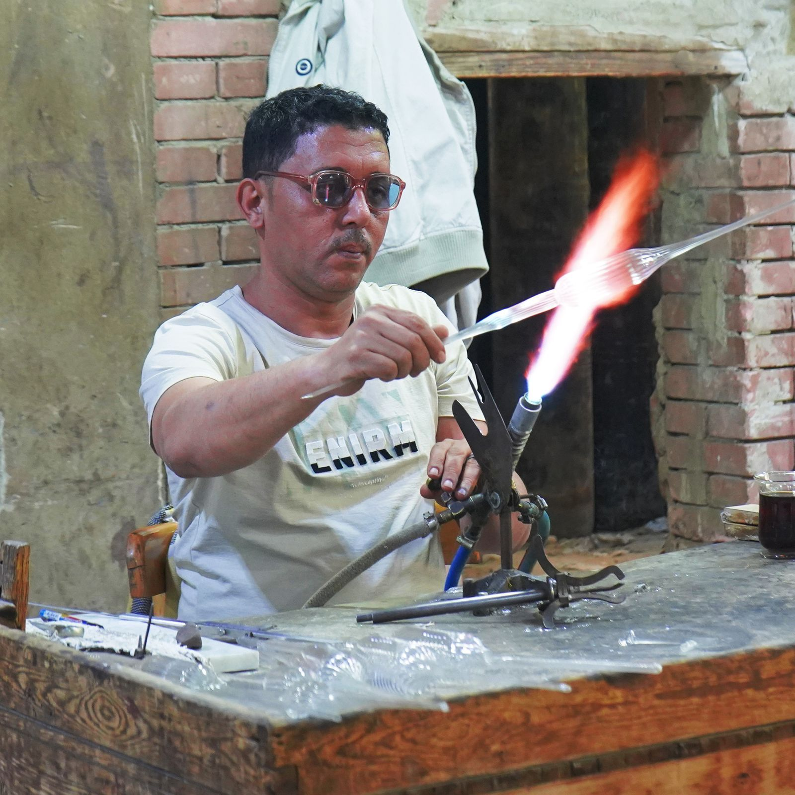
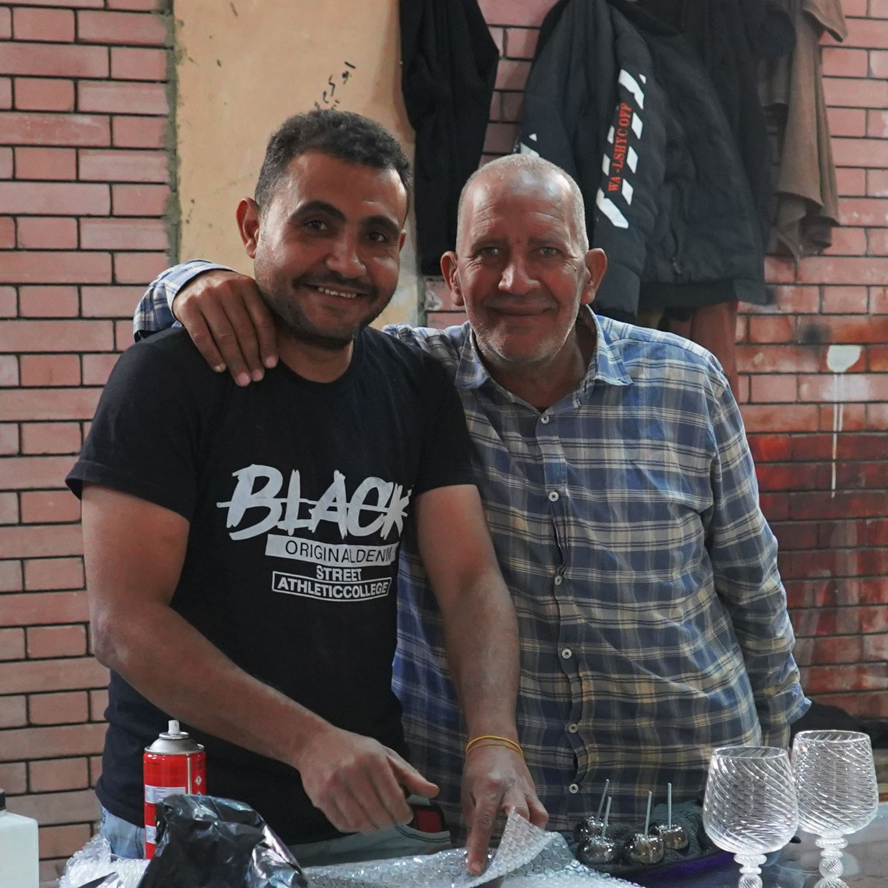

Our in-house glass blowers are the secret behind our unparalleled success in creating stunning glass products.
Their remarkable techniques and superior skills are unmatched, making them a valuable asset to our team.
These imaginative artisans take glass-making to the next level, pushing the boundaries of what's possible with the medium.






Their ability to see things through the glass-making process allows them to create one-of-a-kind designs that leave an indelible mark on the industry. At our company, we pride ourselves on being at the forefront of innovation, and our glass blowers play a key role in achieving that vision. With their powerful and exciting contributions, we continue to craft exceptional glass creations that are truly unique.